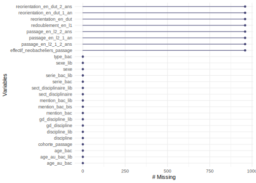
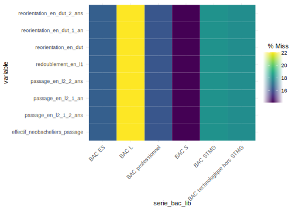
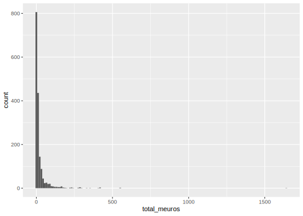

Chapitre 4 Manipulation des variables
On va transformer toutes nos variables caractères en variables ‘factor’ pour que R reconnaisse les différents niveaux, c’est-à-dire modalités, des variables par la suite. Une façon simple de le faire est d’utiliser la fonction mutate_if.
PassageL1L2 <- PassageL1L2 %>% mutate_if(is.character, as.factor)
ReussiteLic <- ReussiteLic %>% mutate_if(is.character, as.factor)On peut ainsi vérifier que les variables “cohorte_passage” et “cohorte_reussite” ont toujours la même modalité :
nlevels(PassageL1L2$cohorte_passage)[1] 1levels(PassageL1L2$cohorte_passage)[1] "2014"nlevels(ReussiteLic$cohorte_reussite)[1] 1levels(ReussiteLic$cohorte_reussite)[1] "2012"Pour la suite, on travaillera essentiellement sur la base “PassageL1L2”, mais vous pouvez réaliser le même type d’analyse pour la base “ReussiteLic”.
On peut également vérifier les variables numériques qui restent, en les sélectionnant avec select_if() :
PassageL1L2 %>% select_if(is.numeric) %>% head(2) %>% gt()| passage_en_l2_2_ans | effectif_neobacheliers_passage | sexe | passage_en_l2_1_2_ans | reorientation_en_dut | reorientation_en_dut_1_an | redoublement_en_l1 | passage_en_l2_1_an | reorientation_en_dut_2_ans | sect_disciplinaire | serie_bac |
|---|---|---|---|---|---|---|---|---|---|---|
| 0 | 1 | 1 | 0 | 0 | 0 | 0 | 0 | 0 | 23 | 4 |
| 0 | 10 | 1 | 0 | 1 | 1 | 4 | 0 | 0 | 33 | 4 |
#ReussiteLic %>% select_if(is.numeric) %>% head(2)Ahhh on voit que 3 variables sont en réalité des variables catégorielles mais avec des modalités numériques : “sexe”, “sect_disciplinaire” et “serie_bac”. On va donc les transformer en variable ‘factor’.
PassageL1L2 <- PassageL1L2 %>% mutate(sexe=as.factor(sexe),
sect_disciplinaire=as.factor(sect_disciplinaire),
serie_bac=as.factor(serie_bac))Ensuite, il est souvent d’usage d’utiliser la fonction summary() pour donner une idée sur l’ensemble des variables, soit de la distribution pour les variables quanti, soit de la répartition des différentes modalités pour les variables quali ; la fonction permet également de nous donner l’information sur l’existence et le nombre de valeurs manquantes pour chaque variable.
summary(PassageL1L2) passage_en_l2_2_ans effectif_neobacheliers_passage
Min. : 0.000 Min. : 1.00
1st Qu.: 0.000 1st Qu.: 2.00
Median : 0.000 Median : 6.00
Mean : 4.316 Mean : 35.12
3rd Qu.: 2.000 3rd Qu.: 23.00
Max. :571.000 Max. :2454.00
NA's :959 NA's :959
sect_disciplinaire_lib sexe
Sciences juridiques : 187 1:2756
Langues étrangères appliquées : 177 2:2752
Langues et littératures étrangères: 176
Psychologie : 176
STAPS : 173
Arts : 172
(Other) :4447
age_au_bac_lib passage_en_l2_1_2_ans
A l'heure ou en avance :2021 Min. : 0.00
En retard d'un an :1746 1st Qu.: 1.00
En retard de plus d'un an:1316 Median : 2.00
Non pris en compte : 425 Mean : 18.63
3rd Qu.: 8.00
Max. :1950.00
NA's :959
serie_bac_lib age_au_bac gd_discipline
BAC ES :1066 R0:2021 DSA :1097
BAC L : 896 R1:1746 LLSH :2562
BAC professionnel : 425 R2:1316 SANTE: 15
BAC S :1218 R4: 425 SI :1661
BAC STMG : 848 STAPS: 173
BAC technologique hors STMG:1055
gd_discipline_lib mention_bac_lib
Droit, gestion, économie, AES :1097 Assez bien :1080
Lettres, langues et sciences humaines:2562 Bien : 796
Santé : 15 Inconnue : 848
Sciences et sciences de l'ingénieur :1661 Passable deuxième groupe:1112
STAPS : 173 Passable premier groupe :1220
Très bien : 452
discipline reorientation_en_dut
06 :1395 Min. : 0.000
15 :1168 1st Qu.: 0.000
04 : 593 Median : 0.000
01 : 470 Mean : 0.805
02 : 462 3rd Qu.: 0.000
05 : 459 Max. :79.000
(Other): 961 NA's :959
discipline_lib reorientation_en_dut_1_an
Sciences humaines et sociales :1395 Min. : 0.0000
Sciences fondamentales et applications:1168 1st Qu.: 0.0000
Lettres, sciences du langage, arts : 593 Median : 0.0000
Droit, sciences politiques : 470 Mean : 0.6186
Sciences économiques, gestion : 462 3rd Qu.: 0.0000
Langues : 459 Max. :63.0000
(Other) : 961 NA's :959
redoublement_en_l1 passage_en_l2_1_an cohorte_passage
Min. : 0.0 Min. : 0.00 2014:5508
1st Qu.: 0.0 1st Qu.: 0.00
Median : 1.0 Median : 1.00
Mean : 10.2 Mean : 14.32
3rd Qu.: 6.0 3rd Qu.: 6.00
Max. :1019.0 Max. :1494.00
NA's :959 NA's :959
reorientation_en_dut_2_ans sect_disciplinaire sexe_lib mention_bac
Min. : 0.0000 36 : 187 Femme:2752 A: 452
1st Qu.: 0.0000 24 : 177 Homme:2756 B: 796
Median : 0.0000 23 : 176 C:1080
Mean : 0.1864 32 : 176 D:1220
3rd Qu.: 0.0000 10 : 173 P:1112
Max. :21.0000 21 : 172 Q: 848
NA's :959 (Other):4447
serie_bac
1: 896
2:1066
3:1218
4: 848
5:1055
6: 425
Mais, en réalité ici, ces statistiques n’ont pas grand sens en soi, en raison encore une fois du fait que l’on a des variables micro-agrégées ; et pour avoir les “vraies” statistiques il faut sommer notre variable clé d’effectif à chaque fois, c’est-à-dire pour chaque variable catégorielle.
Par exemple :
# Si on veut la répartition des inscrits 2014-2015 en licence selon
# la série du Bac :
PassageL1L2 %>% group_by(serie_bac_lib) %>%
summarise(eff_2014=sum(effectif_neobacheliers_passage, na.rm=T)) %>%
adorn_totals("row") %>% gt()| serie_bac_lib | eff_2014 |
|---|---|
| BAC ES | 46424 |
| BAC L | 31089 |
| BAC professionnel | 14527 |
| BAC S | 43130 |
| BAC STMG | 13959 |
| BAC technologique hors STMG | 10637 |
| Total | 159766 |
# ou avec les fonctions count() en utilisant l'argument wt=
# PassageL1L2 %>% count(serie_bac_lib, wt = effectif_neobacheliers_passage)
# %>% adorn_totals("row") %>% gt()Si on veut trier le résultat pour voir la catégorie la plus importante en première, on peut utiliser la fonction arrange(), qui peut être utilisée plus généralement sur des dataframe.
# Si on veut la répartition des inscrits 2014-2015 en licence selon la série du
# Bac, triée par ordre décroissant :
PassageL1L2 %>% group_by(serie_bac_lib) %>%
summarise(eff_2014=sum(effectif_neobacheliers_passage, na.rm=T)) %>%
arrange(desc(eff_2014)) %>% adorn_totals("row") %>%
gt()| serie_bac_lib | eff_2014 |
|---|---|
| BAC ES | 46424 |
| BAC S | 43130 |
| BAC L | 31089 |
| BAC professionnel | 14527 |
| BAC STMG | 13959 |
| BAC technologique hors STMG | 10637 |
| Total | 159766 |
# Si on veut les effectifs pour chaque situation à la fin de la L1 :
PassageL1L2 %>%
summarise(passage_l2=sum(passage_en_l2_1_an, na.rm=T),
redoublement_l1=sum(redoublement_en_l1, na.rm=T),
reorientation_dut_l1=sum(reorientation_en_dut_1_an, na.rm=T)) %>%
gt()| passage_l2 | redoublement_l1 | reorientation_dut_l1 |
|---|---|---|
| 65127 | 46392 | 2814 |
4.1 Manipulation des variables qualitatives
On peut d’abord travailler sur les variables qualitatives. On regarde les différents niveaux pour chacune d’entre elles. On peut avoir recours pour cela à la fonction sapply() qui permet d’appliquer la fonction indiquée entre parenthèses (ici levels()) à tous les éléments de notre table.
PassageL1L2 %>% select_if(is.factor) %>% sapply(levels)$sect_disciplinaire_lib
[1] "Administration économique et sociale"
[2] "Aménagement"
[3] "Archéologie, ethnologie, préhistoire"
[4] "Arts"
[5] "Chimie"
[6] "Cultures et langues régionales"
[7] "Électronique, génie électrique"
[8] "Formation générale aux métiers de l'ingénieur"
[9] "Génie civil"
[10] "Génie des procédés"
[11] "Géographie"
[12] "Histoire"
[13] "Informatique"
[14] "Langues et littératures anciennes"
[15] "Langues et littératures étrangères"
[16] "Langues et littératures françaises"
[17] "Langues étrangères appliquées"
[18] "Mathématique et informatique"
[19] "Mathématiques"
[20] "Mathématiques appliquées et sciences sociales"
[21] "Mécanique, génie mécanique"
[22] "Médecine"
[23] "Philosophie, épistémologie"
[24] "Physique"
[25] "Physique et chimie"
[26] "Pluridisciplinaire droit, sciences politiques"
[27] "Pluridisciplinaire langues"
[28] "Pluridisciplinaire lettres, langues, sciences humaines"
[29] "Pluridisciplinaire lettres, sciences du langage, arts"
[30] "Pluridisciplinaire sciences"
[31] "Pluridisciplinaire sciences de la vie, de la santé, de la terre et de l'univers"
[32] "Pluridisciplinaire sciences économiques et gestion"
[33] "Pluridisciplinaire sciences fondamentales et applications"
[34] "Pluridisciplinaire sciences humaines et sociales"
[35] "Psychologie"
[36] "Sciences de gestion"
[37] "Sciences de l'éducation"
[38] "Sciences de l'information et la communication"
[39] "Sciences de l'univers"
[40] "Sciences de la vie"
[41] "Sciences du langage, linguistique"
[42] "Sciences économiques"
[43] "Sciences juridiques"
[44] "Sciences politiques"
[45] "Sciences religieuses"
[46] "Sociologie, démographie"
[47] "STAPS"
[48] "Technologie et sciences industrielles"
$sexe
[1] "1" "2"
$age_au_bac_lib
[1] "A l'heure ou en avance" "En retard d'un an"
[3] "En retard de plus d'un an" "Non pris en compte"
$serie_bac_lib
[1] "BAC ES" "BAC L"
[3] "BAC professionnel" "BAC S"
[5] "BAC STMG" "BAC technologique hors STMG"
$age_au_bac
[1] "R0" "R1" "R2" "R4"
$gd_discipline
[1] "DSA" "LLSH" "SANTE" "SI" "STAPS"
$gd_discipline_lib
[1] "Droit, gestion, économie, AES"
[2] "Lettres, langues et sciences humaines"
[3] "Santé"
[4] "Sciences et sciences de l'ingénieur"
[5] "STAPS"
$mention_bac_lib
[1] "Assez bien" "Bien"
[3] "Inconnue" "Passable deuxième groupe"
[5] "Passable premier groupe" "Très bien"
$discipline
[1] "01" "02" "03" "04" "05" "06" "09" "10" "11" "15" "32" "33"
$discipline_lib
[1] "Administration économique et sociale"
[2] "Droit, sciences politiques"
[3] "Langues"
[4] "Lettres, sciences du langage, arts"
[5] "Médecine"
[6] "Pluridisciplinaire lettres, langues, sciences humaines"
[7] "Pluridisciplinaire sciences"
[8] "Sciences de la vie, de la terre et de l'univers"
[9] "Sciences économiques, gestion"
[10] "Sciences fondamentales et applications"
[11] "Sciences humaines et sociales"
[12] "STAPS"
$cohorte_passage
[1] "2014"
$sect_disciplinaire
[1] "1" "2" "3" "4" "5" "6" "7" "10" "11" "12" "13" "14" "15" "16" "17"
[16] "18" "19" "21" "23" "24" "25" "26" "27" "28" "29" "30" "31" "32" "33" "34"
[31] "35" "36" "37" "38" "39" "40" "41" "42" "43" "61" "62" "64" "65" "66" "67"
[46] "68" "69" "70"
$sexe_lib
[1] "Femme" "Homme"
$mention_bac
[1] "A" "B" "C" "D" "P" "Q"
$serie_bac
[1] "1" "2" "3" "4" "5" "6"On observe que la première variable affichée “sect_disciplinaire_lib” a de nombreuses modalités, 48 précisément, on ne s’en servira que pour une analyse détaillée ; la variable “age_au_bac_lib” compte 4 modalités que l’on pourrait réduire à 3 en regroupant les deux modalités “en retard” ; de même pour la variable de “serie_bac_lib”, on pourrait les regrouper ou créer une autre variable n’ayant que 3 modalités et qui soit alors plus générale ; idem pour la “mention_bac_lib” en regroupant les “passables”.
On va faire tout cela en utilisant les fonctions mutate(), case_when() et as.factor(), mais aussi en dernier exemple les fonctions fct_relevel() et fct_collapse() du package forcats :
PassageL1L2 <- PassageL1L2 %>%
mutate(age_bac = as.factor(case_when(age_au_bac_lib == "A l'heure ou en avance" ~ "A l'heure ou en avance",
age_au_bac_lib %in% c("En retard d'un an", "En retard de plus d'un an") ~ "En retard",
age_au_bac_lib == "Non pris en compte" ~ "Non pris en compte")),
type_bac = as.factor(case_when(serie_bac_lib %in% c("BAC ES", "BAC L", "BAC S") ~ "Bac général",
serie_bac_lib %in% c("BAC STMG", "BAC technologique hors STMG") ~ "Bac technologique",
serie_bac_lib == "BAC professionnel" ~ "Bac professionnel")),
mention_bac_bis = fct_collapse(mention_bac_lib, 'Passable' = c("Passable deuxième groupe", "Passable premier groupe")),
mention_bac_bis = fct_relevel(mention_bac_bis, c("Très bien", "Bien", "Assez bien", "Passable", "Inconnue")))
#table(PassageL1L2$mention_bac_lib,PassageL1L2$mention_bac_bis)En effeti, pour travailler sur les variables qualitatives en particulier lorsqu’elles sont en “facteurs”, le package forcats est très utile. Outre une fonction de transformation d’une variable caractère en facteur (as_factor() proche de la version de baseR as.factor() utilisée juste au-dessus), elle contient plein d’autres fonctions : fct_collapse() utilisée à la fin de la commande précédente pour renommer ou regrouper des modalités d’une variable (au lieu de la double fonction as.factor() et case_when()) ; fct_relevel() utilisée également au-dessus pour trier les modalités comme on le souhaite ; fct_drop() pour enlever des niveaux de facteurs vides/sans effectifs ; fct_explicit_na() pour rendre les NA explicites en créant une modalité “(missing)” ; fct_reorder() et fct_reorder2() pour réordonner les modalités d’une variable, très utile pour les graphiques car utilisables directement dans ggplot() ; fct_lump() pour regrouper les modalités les plus communes (ou au contraire les moins communes) en lui indiquant entre parenthèses le nombre n= de modalités souhaitées ou la proportion minimum souhaitée prop=, et en sélectionnant la variable avec la fonction pull() avant car elle doit être en format vecteur et non data.frame ; ou encore fct_recode() pour changer le niveau des facteurs ; fct_other() ; fct_infreq() et fct_inorder() ; etc.
4.2 Manipulation des variables quantitatives
PassageL1L2 %>% select_if(is.numeric) %>% head(4) %>% gt()| passage_en_l2_2_ans | effectif_neobacheliers_passage | passage_en_l2_1_2_ans | reorientation_en_dut | reorientation_en_dut_1_an | redoublement_en_l1 | passage_en_l2_1_an | reorientation_en_dut_2_ans |
|---|---|---|---|---|---|---|---|
| 0 | 1 | 0 | 0 | 0 | 0 | 0 | 0 |
| 0 | 10 | 0 | 1 | 1 | 4 | 0 | 0 |
| 1 | 3 | 3 | 0 | 0 | 1 | 2 | 0 |
| NA | NA | NA | NA | NA | NA | NA | NA |
Nous avons 8 variables numériques : notre variable clé ‘effectif_neobacheliers_passage’, 3 variables renseignant de l’année de passage en L2 - ‘passage_en_l2_1_an’, ‘passage_en_l2_1_2_ans’, ‘passage_en_l2_2_ans’, 1 variable de ‘redoublement_en_l1’, et de nouveau 3 variables renseignant la réorientation en DUT selon l’année - ‘reorientation_en_dut’, ‘reorientation_en_dut_1_an’, ‘reorientation_en_dut_2_ans’. On voit par ailleurs qu’il y a des valeurs manquantes pour ces variables.
4.2.1 Détecter et “visualiser” les données manquantes
Même si l’information nous avait été donnée par la fonction summary(), on peut également compter le nombre de valeurs manquantes NA pour chacune des variables avec la fonction colSums(), cela est plus synthétique que summary() qui nous donne d’autres informations par ailleurs :
# ou en langage tidyverse sur les seules variables numériques :
# PassageL1L2 %>% filter_if(is.numeric) %>% summarise_all(funs(sum(is.na(.))))
colSums(is.na(PassageL1L2)) passage_en_l2_2_ans effectif_neobacheliers_passage
959 959
sect_disciplinaire_lib sexe
0 0
age_au_bac_lib passage_en_l2_1_2_ans
0 959
serie_bac_lib age_au_bac
0 0
gd_discipline gd_discipline_lib
0 0
mention_bac_lib discipline
0 0
reorientation_en_dut discipline_lib
959 0
reorientation_en_dut_1_an redoublement_en_l1
959 959
passage_en_l2_1_an cohorte_passage
959 0
reorientation_en_dut_2_ans sect_disciplinaire
959 0
sexe_lib mention_bac
0 0
serie_bac age_bac
0 0
type_bac mention_bac_bis
0 0 #Pour les avoir en proportion :
round(colMeans(is.na(PassageL1L2)*100),2) passage_en_l2_2_ans effectif_neobacheliers_passage
17.41 17.41
sect_disciplinaire_lib sexe
0.00 0.00
age_au_bac_lib passage_en_l2_1_2_ans
0.00 17.41
serie_bac_lib age_au_bac
0.00 0.00
gd_discipline gd_discipline_lib
0.00 0.00
mention_bac_lib discipline
0.00 0.00
reorientation_en_dut discipline_lib
17.41 0.00
reorientation_en_dut_1_an redoublement_en_l1
17.41 17.41
passage_en_l2_1_an cohorte_passage
17.41 0.00
reorientation_en_dut_2_ans sect_disciplinaire
17.41 0.00
sexe_lib mention_bac
0.00 0.00
serie_bac age_bac
0.00 0.00
type_bac mention_bac_bis
0.00 0.00 Différents packages existent pour détecter et visualiser les données manquantes. Un d’entre eux est le package naniar : quelques fonctions permettent d’abord de décrire la base selon ses valeurs manquantes.
library(naniar)
n_miss(PassageL1L2) #nombre de cellules du tableau ou de n_ij d'une matrice [1] 7672#qui correspondent à des valeurs manquantes
pct_miss(PassageL1L2) #en proportion (déjà en %, sinon utiliser `prop_miss(PassageL1L2)`)[1] 5.357243n_complete(PassageL1L2) #nombre de cellules du tableau ou de n_ij d'une matrice [1] 135536#qui correspondent à des valeurs renseignées
pct_complete(PassageL1L2) #en proportion[1] 94.64276# 1er type de visualisation des valeurs manquantes
PassageL1L2 %>% gg_miss_var()
On peut également demander dans gg_miss_var() à ce que les valeurs soient en pourcentage, avec l’argument show_pct=TRUE.
On peut aussi réaliser des graphiques montrant le nombre de valeurs manquantes pour l’ensemble des variables numériques de la base, en fonction d’une autre variable de nature catégorielle. Cela est intéressant pour voir si certaines valeurs manquantes des variables se retrouvent davantage dans des modalités précises d’une autre variable. Par exemple, ici, selon la série au bac :
PassageL1L2 %>% select(where(is.numeric), serie_bac_lib) %>%
gg_miss_fct(fct = serie_bac_lib) On voit que les valeurs manquantes sont plus nombreuses pour la modalité “BAC L” et sont le moins nombreuses dans la modalité “BAC S” ; elles ne se distribuent ainsi pas de manière uniforme selon la variable de série du bac, en revanche comme on l’avait vu les proportions sont les mêmes quelle que soit la valeur manquante…
Plus généralement, la fonction gg_miss_upset() de ce package permet de visualiser des dépendances entre les valeurs manquantes des variables ; mais ici cela n’a pas grand intérêt en réalité car les valeurs manquantes sont présentes pour toutes les variables numériques aux mêmes cellules… Voici le code néanmoins.
PassageL1L2 %>% select_if(is.numeric) %>% gg_miss_upset()toujours pour information, une autre fonction pour visualiser des combinaisons entre des variables comportant des valeurs manquantes est aggr() du package VIM. De même, voici le code :
library(VIM)
PassageL1L2 %>% select_if(is.numeric) %>% aggr(sortVar=TRUE, only.miss = TRUE)Enfin, il est possible d’appliquer la fonction geom_miss_point() à un ggplot, dans ce cas les valeurs manquantes de la ou des variables sont remplacées par des valeurs 10% plus basses que la valeur minimum observée des variables, et cela afin de les visualiser.
Il existe bien sûr bien d’autres packages, comme funModeling, Amelia et sa fonction missmap(), ou encore visdat et sa fonction vis_miss(), etc. D’autres packages comme VIM ou MICE permettent non seulement de visualiser ces valeurs manquantes mais de leur appliquer des techniques pour les “gérer”, c’est ce que l’on va voir maintenant en résumé.
4.2.2 Gérer les données manquantes
Il est bien de connaître le nombre et la proportion de valeurs manquantes dans nos données, comment ces dernières se répartissent entre elles, etc., mais il faut aussi comprendre quel impact elles peuvent avoir sur des analyses statistiques, de régressions ou autres algorithmes.
Dans une base de données tirée d’une enquête, les valeurs manquantes proviennent d’une non-réponse de la part de l’enquêté (que ce soit un individu ou une entreprise), cette non-réponse peut être “totale” (on a aucune donnée pour cet enquêté alors qu’il fait partie de l’échantillon) ou “partielle” (on a une partie des réponses mais pas à toutes les questions et donc des variables parfois avec des valeurs manquantes) ; ou bien encore d’une mauvaise saisie de l’information par l’enquêteur. La pondération, si elle est présente dans une enquête, peut permettre de corriger de cette non-réponse totale, voire partielle.
Les conséquences des valeurs manquantes dans une base de données dépend de plusieurs choses on doit se demander d’abord si l’information perdue aurait été pertinente et/ou aurait apporté un élément particulier/supplémentaire. Ensuite, la perte éventuelle d’information est-elle importante, en nombre/en proportion. Et enfin (et surtout), peut-elle créer un biais lors de l’estimation et précision du phénomène que l’on souhaite observer, décrire, analyser, etc. Selon l’importance de ces conséquences, il faut traiter ces valeurs manquantes, c’est-à-dire utiliser une procédure la plus adaptée possible selon le potentiel biais repéré.
Traditionnellement dans la littérature, on distingue 3 types de valeurs manquantes :
- valeur manquante entièrement due au hasard (‘MCAR’ pour Missing completely at random) : il n’y a pas de lien entre la valeur manquante pour une variable donnée et les autres variables, dit autrement la probabilité pour une variable qu’elle ait une valeur manquante est constante dans les données, elle ne diffère pas selon d’autres caractéristiques des individus ;
- valeur manquante due au hasard (‘MAR’ pour Missing at random) : il y a un lien entre la valeur manquante pour une variable donnée et les valeurs observées d’autres variables, c’est-à-dire que la probabilité pour une variable qu’elle ait une valeur manquante dépend d’autres variables (mais de leurs valeurs observées), elle ne sera donc pas la même selon les individus ;
- valeur ne manquant pas au hasard (‘NMAR’ pour Non missing at random) : il y a un lien entre la valeur manquante pour une variable et les valeurs manquantes/non observées d’autres variables. Ce sont celles qui risquent d’entraîner des biais importants si on ne les traite pas.
Comment alors les gérer ? En pratique, il est d’usage lorsque la proportion de valeurs manquantes ne dépasse pas 5% des données de ne rien faire de particulier ou simplement de les supprimer. Sinon, on essaye d’appliquer plusieurs méthodes, simples ou plus complexes.
Dans le cas de valeurs manquantes entièrement dues au hasard (MCAR) et/ou d’une faible proportion des valeurs manquantes dans le total de la table de données, on peut décider de supprimer toutes les lignes qui contiennent au moins une valeur manquante, afin d’avoir une table de données complètes, on peut utiliser la fonction na.omit() ou complete.cases().
PassageL1L2_sansNA <- na.omit(PassageL1L2)
# OU :
# PassageL1L2_sansNA <- PassageL1L2[complete.cases(PassageL1L2), ]
summary(PassageL1L2_sansNA) passage_en_l2_2_ans effectif_neobacheliers_passage
Min. : 0.000 Min. : 1.00
1st Qu.: 0.000 1st Qu.: 2.00
Median : 0.000 Median : 6.00
Mean : 4.316 Mean : 35.12
3rd Qu.: 2.000 3rd Qu.: 23.00
Max. :571.000 Max. :2454.00
sect_disciplinaire_lib sexe
Sciences juridiques : 186 1:2264
Langues et littératures étrangères: 170 2:2285
Psychologie : 169
Langues étrangères appliquées : 168
STAPS : 168
Histoire : 167
(Other) :3521
age_au_bac_lib passage_en_l2_1_2_ans
A l'heure ou en avance :1750 Min. : 0.00
En retard d'un an :1439 1st Qu.: 1.00
En retard de plus d'un an:1004 Median : 2.00
Non pris en compte : 356 Mean : 18.63
3rd Qu.: 8.00
Max. :1950.00
serie_bac_lib age_au_bac gd_discipline
BAC ES : 890 R0:1750 DSA : 927
BAC L : 698 R1:1439 LLSH :2112
BAC professionnel : 356 R2:1004 SANTE: 9
BAC S :1046 R4: 356 SI :1333
BAC STMG : 694 STAPS: 168
BAC technologique hors STMG: 865
gd_discipline_lib mention_bac_lib
Droit, gestion, économie, AES : 927 Assez bien : 896
Lettres, langues et sciences humaines:2112 Bien : 670
Santé : 9 Inconnue : 637
Sciences et sciences de l'ingénieur :1333 Passable deuxième groupe: 925
STAPS : 168 Passable premier groupe :1045
Très bien : 376
discipline reorientation_en_dut
06 :1213 Min. : 0.000
15 : 924 1st Qu.: 0.000
04 : 457 Median : 0.000
02 : 398 Mean : 0.805
01 : 371 3rd Qu.: 0.000
05 : 359 Max. :79.000
(Other): 827
discipline_lib reorientation_en_dut_1_an
Sciences humaines et sociales :1213 Min. : 0.0000
Sciences fondamentales et applications: 924 1st Qu.: 0.0000
Lettres, sciences du langage, arts : 457 Median : 0.0000
Sciences économiques, gestion : 398 Mean : 0.6186
Droit, sciences politiques : 371 3rd Qu.: 0.0000
Langues : 359 Max. :63.0000
(Other) : 827
redoublement_en_l1 passage_en_l2_1_an cohorte_passage
Min. : 0.0 Min. : 0.00 2014:4549
1st Qu.: 0.0 1st Qu.: 0.00
Median : 1.0 Median : 1.00
Mean : 10.2 Mean : 14.32
3rd Qu.: 6.0 3rd Qu.: 6.00
Max. :1019.0 Max. :1494.00
reorientation_en_dut_2_ans sect_disciplinaire sexe_lib mention_bac
Min. : 0.0000 36 : 186 Femme:2285 A: 376
1st Qu.: 0.0000 23 : 170 Homme:2264 B: 670
Median : 0.0000 32 : 169 C: 896
Mean : 0.1864 10 : 168 D:1045
3rd Qu.: 0.0000 24 : 168 P: 925
Max. :21.0000 27 : 167 Q: 637
(Other):3521
serie_bac age_bac type_bac
1: 698 A l'heure ou en avance:1750 Bac général :2634
2: 890 En retard :2443 Bac professionnel: 356
3:1046 Non pris en compte : 356 Bac technologique:1559
4: 694
5: 865
6: 356
mention_bac_bis
Très bien : 376
Bien : 670
Assez bien: 896
Passable :1970
Inconnue : 637
On se retrouve avec une table de 4 549 observations (lignes), on a donc perdu 959 observations, soit 17.41% des observations de la table initiale.
Des techniques d’imputation simple peuvent également être utilisées. On peut par exemple remplacer les valeurs manquantes d’une variable quantitative par sa moyenne ou sa médiane, pour cela on peut utiliser la fonction replace_na() du package tidyr, ou impute() du package Hmisc, ou encore na.aggregate() du package zoo On donne ainsi une valeur “artificielle” pour remplacer la valeur manquante. Dans le cas de variables qualitatives, on peut, de même, imputer la modalité dominante (avec la fonction mode() du package Hmisc ; ou avec l’argument mode= du package zoo ). Par exemple, voici les codes pour remplacer les valeurs manquantes de la variable ‘passage_en_l2_2_ans’ par sa moyenne (ici on ne fait pas tourner ces codes) :
PassageL1L2 %>%
mutate(passage_en_l2_2_ans_bis=replace_na(passage_en_l2_2_ans,
mean(passage_en_l2_2_ans, na.rm=TRUE)))
library(Hmisc)
PassageL1L2$passage_en_l2_2_ans_bis <- with(PassageL1L2,
impute(passage_en_l2_2_ans, mean))
library(zoo)
PassageL1L2$passage_en_l2_2_ans_bis <- na.aggregate(PassageL1L2$passage_en_l2_2_ans,
FUN = mean)On peut néanmoins réaliser ce type d’imputations simple de manière un petit peu plus subtile. Par exemple, la moyenne d’une variable peut différer selon d’autres variables. Dans ce cas, on va donc remplacer les valeurs manquantes de la variable selon la moyenne associée à chaque modalité de l’autre variable en ajoutant un group_by() avant la fonction mutate() si l’on utilise la fonction replace_na() par exemple.
Si on ne veut pas supprimer ces lignes d’observations et perdre ainsi d’autres informations (celles des variables pour lesquelles la valeur était renseignée pour cette même observation), on peut simplement créer une variable indicatrice de valeur manquante, habituellement ‘9’ ou ‘999’ pour des variables quantitatives, ou une modalité ‘Manquant’ ou ‘Missing’ pour des variables qualitatives.
Plusieurs autres méthodes existent également dans le cas de valeurs manquantes dues au hasard (MAR), en voici la liste pour information et sans prétention d’exhaustivité : - analyse pondérée pour des valeurs MAR qui consiste à calculer la probabilité qu’une observation soit complète et ensuite à affecter à chacune des observations complètes, un poids inversement proportionnel à cette probabilité ; - imputation de la dernière observation pour des données temporelles ; - imputation “hot-deck” qui consiste à remplacer la valeur manquante par une valeur observée chez un autre individu ayant les mêmes caractéristiques, ou “cold-deck” (même démarche que précédement, sauf que la valeur imputée vient d’une autre source) ; - imputation par le “plus proche voisin” en utilisant une fonction de distance basée sur plusieurs autres variables/caractéristiques de l’individu ; - imputation par un modèle de régression où l’on va remplacer la valeur manquante par une valeur prédite obtenue par régression sur données complètes de la variable comportant des valeurs manquantes.
Il y a aussi des techniques plus complextes d’imputation multiple qui consiste à créer plusieurs valeurs possibles pour une valeur manquante d’une variable, cela peut être adaptée là aussi lorsque les valeurs manquantes sont dues au hasard (MAR).
Vous trouverez de multiples ressources sur internet dans des ouvrages libres d’accès, ou un chapitre avec des exemples dans l’ouvrage principal support du cours (Husson, 2018).
4.2.3 Détecter et “visualiser” les données aberrantes
Pour cela, on va utiliser une autre base, téléchargée sur opendatasoft à partir de la fonction créée lors de la séance de M. Grasland. Cette base dont le nom est “aides-entreprises-covid-19-france” renseigne du nombre d’aides financières et de leur montant accordées aux entreprises françaises durant la crise du covid_19, selon notamment le secteur d’activité et la localisation géographique.
#rappel fonction (soit vous l'avez encore dans votre environnement, soit
#vous l'avez sauvegardé et dans ce cas il faut l'appeler, soit vous devez
#refaire tourner les lignes de codes suivantes...)
get_data <- function(idtab, rows, start) {
url <- paste0("https://public.opendatasoft.com/api/records/1.0/search/?dataset=",idtab,"&q=&rows=",rows,"&start=",start,sep="")
x <- GET(url)
y <- fromJSON(rawToChar((x$content)))
don <- y$records$fields
return(don)
}
dt_aidesCovid <- get_data(idtab = "aides-entreprises-covid-19-france",
rows=2000,
start=0)
dt_aidesCovid %>% glimpse()Rows: 1,680
Columns: 13
$ reg_code <int> 84, 84, 84, 84, 27, 27, 27, 53, 53, 24, 24, 24~
$ geo_point_2d <list> <45.263906, 5.573978>, <45.728000, 4.164813>,~
$ naf_section_name <chr> "Activités de services administratifs et de so~
$ nombre_entreprises <int> 1775, 3034, 6577, 6772, 61, 45, 233, 1134, 395~
$ plan <chr> "Fonds de solidarité", "Fonds de solidarité", ~
$ financial_support_count <int> 8428, 8936, 19967, 16910, 366, 194, 971, 8170,~
$ reg_name <chr> "Auvergne-Rhône-Alpes", "Auvergne-Rhône-Alpes"~
$ naf_section_code <chr> "N", "F", "F", "Q", "J", "K", "L", "R", "G", "~
$ total_meuros <dbl> 36.512123, 13.922570, 33.039981, 23.111363, 0.~
$ dep_name <chr> "Isère", "Loire", "Rhône", "Rhône", "Nièvre", ~
$ iso3_code <chr> "FXX", "FXX", "FXX", "FXX", "FXX", "FXX", "FXX~
$ dep_code <chr> "38", "42", "69", "69", "58", "89", "89", "29"~
$ total <dbl> 36512123, 13922570, 33039981, 23111363, 736895~Comme la base précédente, ces données sont micro-agrégées, mais de manière plus simple : ici une observation est “juste” le croisement d’un secteur et d’un département, il faut donc sommer les variables pour avoir une idée des montants.
dt_aidesCovid %>% summarise(total_aides=sum(total),
total_aides_meuros=sum(total_meuros),
nb_totales_aides=sum(financial_support_count),
nb_totales_entre=sum(nombre_entreprises)) %>% gt() %>%
fmt_number(columns = c("total_aides", "total_aides_meuros", "nb_totales_aides",
"nb_totales_entre"), sep_mark = " ", decimals = 0)| total_aides | total_aides_meuros | nb_totales_aides | nb_totales_entre |
|---|---|---|---|
| 35 358 264 997 | 35 358 | 10 520 869 | 2 016 007 |
On veut plus précisément étudier dans cette sous-section les possibles valeurs aberrantes. On peut alors sortir les valeurs maximum pour chacune de ces variables.
dt_aidesCovid %>% summarise(aides_max=max(total), aides_meuros_max=max(total_meuros),
nb_max_aides=max(financial_support_count),
nb_max_entre=max(nombre_entreprises)) %>% gt() %>%
fmt_number(columns = 2:4, sep_mark = " ", decimals = 0)| aides_max | aides_meuros_max | nb_max_aides | nb_max_entre |
|---|---|---|---|
| 1641182219 | 1 641 | 183 570 | 35 372 |
Ou faire quelques graphs sur la variable du montant total des aides en milliers d’euros “total_meuros” pour mieux visualiser de possibles valeurs aberrantes, de manière générale avec un histogramme ou ventilées par région avec des “boîtes à moustache” :
dt_aidesCovid %>% ggplot() + aes(x=total_meuros) + geom_histogram(bins=150)
dt_aidesCovid %>% ggplot() + aes(x = reg_name, y = total_meuros) + geom_boxplot() +
coord_flip()On voit en effet quelques points qui semblent des valeurs aberrantes ou “outliers” ; parfois, c’est à tel point qu’on n’arrive même pas à distinguer les différentes valeurs de la distribution marquées par le Boxplot et les boxplot sont ramassées. Pour rappel, dans un boxplot, par défaut un point est affiché comme aberrant s’il est en dehors de l’intervalle suivant : \(I=[Q_{1}−1.5×IQR ; Q_{3}+1.5×IQR]\), IQR étant l’intervalle interquartile donc la différence entre Q1 et Q3.
Mais s’agit-il de “vraies” valeurs aberrantes ? Combien d’observations concernent-elles ? La fonction boxplot.stats() permet de récupérer les valeurs des observations indiquées comme aberrantes, comme cela on peut créer ensuite une variable indiquant si oui ou non l’observation a une valeur “aberrante”. Faisons-cela pour la variable “total_meuros” par exemple.
#on récupère les valeurs de la partie 'out' des sorties de la fonction, qui
#correspondent aux valeurs de tout point de données qui se situe au-delà
#des extrêmes de la boxplot
nb_outliers <- boxplot.stats(dt_aidesCovid$total_meuros)$out
#on crée une variable dans notre table d'"identification" de ces outliers
#avec comme modalité intiale/par défaut "Faux"
dt_aidesCovid$total_meuros_outliers <- "Faux"
#on lui indique la modalité "vraie" si l'observation a une valeur "outliers"
#pour cette variable
dt_aidesCovid$total_meuros_outliers[dt_aidesCovid$total_meuros %in% c(nb_outliers)] <- "Vrai"
#puis on regarde la répartition
dt_aidesCovid %>% tabyl(total_meuros_outliers) %>%
adorn_pct_formatting() %>% adorn_totals("row")# A tibble: 3 x 3
total_meuros_outliers n percent
<chr> <dbl> <chr>
1 Faux 1485 88.4%
2 Vrai 195 11.6%
3 Total 1680 - On y lit que pour cette variable, il y aurait près de 11,6% de valeurs aberrantes telles qu’indiquées par le boxplot, cela fait beaucoup ! On peut regarder plus précisément à quelles observations elles correspondent et à quel montant.
dt_aidesCovid %>% filter(total_meuros_outliers=='Vrai') %>%
select(total_meuros, naf_section_name, dep_name) %>%
arrange(desc(total_meuros)) %>% head(10) %>% gt()| total_meuros | naf_section_name | dep_name |
|---|---|---|
| 1641.1822 | Hébergement et restauration | Paris |
| 554.4675 | Commerce | Paris |
| 549.1241 | Activités spécialisées, scientifiques et techniques | Paris |
| 416.7967 | Activités de services administratifs et de soutien | Paris |
| 414.8821 | Arts, spectacles et activités récréatives | Paris |
| 413.4086 | Hébergement et restauration | Alpes-Maritimes |
| 409.7685 | Hébergement et restauration | Bouches-du-Rhône |
| 355.9510 | Hébergement et restauration | Rhône |
| 333.9413 | Hébergement et restauration | Nord |
| 292.2122 | Hébergement et restauration | Gironde |
OK donc on voit que cette procédure attribue des valeurs aberrantes à des observations qui seraient intéressants néanmoins à conserver, donc attention à identifier les valeurs dites aberrantes, éventuellement avec plusieurs méthodes (cf. ci-dessous) et surtout à les comprendre ensuite, il ne s’agit pas juste de les identifier pour les exclure ensuite des analyses.
Il existe en effet bien d’autres méthodes (méthode basée sur les percentiles ; méthode de Hampel), ainsi que des tests : par exemple, le package outliers vous permet de tester si une valeur (max ou min) est bien une valeur aberrante avec la fonction grubbs.test() (attention bis : à utiliser avec grande attention et beaucoup de parcimonie), ou avec le package EnvStats et la fonction rosnerTest() pour détecter plusieurs “outliers” à la fois.
Pour gérer ces variables aberrantes, on peut les supprimer bien sûr si l’on est sûr que la valeur de la variable n’est pas “normale”, par exemple si on a une variable de salaire avec des modalités inférieures à 0, oui dans ce cas ce sont des mauvais outliers (et d’ailleurs peut-être même pas identifiés comme tel statistiquement) et on peut les supprimer ; de même pour des variables de résultats économiques, on va souvent élaguer la distribution en retirant les 1% (par exemple) du bas et du haut de la distribution pour supprimer des potentiels outliers.
Sinon, on les isole en créant une variable dichotomique “0/1” ou “Faux/Vrai” ; ou on crée une variable qualitative avec plusieurs catégories.
Dans les graphiques, en particulier les boîtes à moustache, on peut les supprimer du graphique et mettre une échelle plus réduite pour que celui-ci soit plus lisible, mais en précisant bien dans la légende que certaines valeurs ne sont pas visibles car enlevées.
dt_aidesCovid %>% ggplot() + aes(x = reg_name, y = total_meuros) +
geom_boxplot(outlier.shape = NA) + coord_flip(ylim = c(0,175)) +
labs(title = "Distribution des aides financières en millions d'euros,
selon la région", y="", x="Région",
caption="Rq : les valeurs au-delà de 175 millions d'euros ne sont pas affichées sur le graphique.") +
theme(plot.caption = element_text(hjust=0))4.2.4 Découper en classes une variable quantitative
On peut enfin découper en classes une variable quantitative et en faire donc une variable qualitative. On utilise pour cela la fonction cut() du langage de base de R. On peut par exemple découper la variable selon les principaux indicateurs de distribution.
dt_aidesCovid %>% get_summary_stats(total_meuros)# A tibble: 1 x 13
variable n min max median q1 q3 iqr mad mean sd se
<chr> <dbl> <dbl> <dbl> <dbl> <dbl> <dbl> <dbl> <dbl> <dbl> <dbl> <dbl>
1 total_meur~ 1680 0.006 1641. 5.99 1.83 17.6 15.8 7.54 21.0 60.3 1.47
# ... with 1 more variable: ci <dbl>dt_aidesCovid$total_meuros_cat <- cut(dt_aidesCovid$total_meuros,
breaks = c(0,
quantile(dt_aidesCovid$total_meuros,0.25),
mean(dt_aidesCovid$total_meuros),
max(dt_aidesCovid$total_meuros)))
dt_aidesCovid %>% tabyl(total_meuros_cat) %>% adorn_pct_formatting() %>% adorn_totals("row") %>% gt()| total_meuros_cat | n | percent |
|---|---|---|
| (0,1.83] | 420 | 25.0% |
| (1.83,21] | 901 | 53.6% |
| (21,1.64e+03] | 359 | 21.4% |
| Total | 1680 | - |
#PassageL1L2 %>% group_by(reor_dut_binaire) %>% summarise(som = sum(effectif_neobacheliers_passage, na.rm=T))On a une classe majoritaire (du Q1 à la moyenne), mais cela nous permet de distinguer 2 classes pour lesquelles le montant des aides financières est très faible ou au contraire très élevé.
A noter que si la variable quantitative en question a des valeurs manquantes, il faudra utiliser la fonction fancycut() ou wafflecut() du package fancycut, l’inconvénient est que cela nous oblige à indiquer les valeurs des différents indicateurs de la distribution. Le code serait alors le suivant :
library(fancycut)
dt_aidesCovid$total_meuros_cat1 <- fancycut(dt_aidesCovid$total_meuros, '1'='(0,1.83]',
'2'='(1.83,21]', '3'='(21,1.64e+03]',
na.bucket='Manquant')# On enregistre la table de données pour l'utiliser ultérieurement
saveRDS(object = PassageL1L2,
file = "data/PassageL1L2.Rdata")
saveRDS(object = dt_aidesCovid,
file = "data/dt_aidesCovid.Rdata")